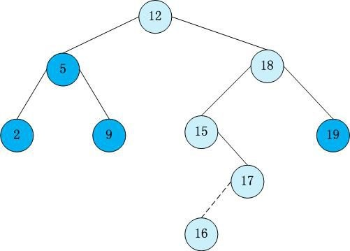
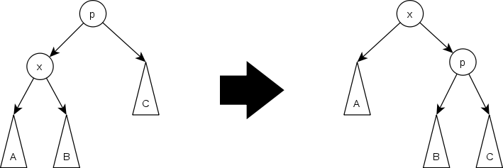
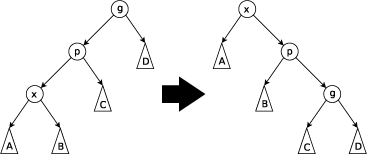
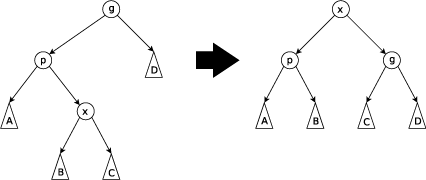

HZOI专题讨论
平衡树
BST
先复习一下二叉查找树（Binary Search Tree），（又：二叉搜索树，二叉排序树）它或者是一棵空树，或者是具有下列性质的二叉树： 若它的左子树不空，则左子树上所有结点的值均小于它的根结点的值； 若它的右子树不空，则右子树上所有结点的值均大于它的根结点的值； 它的左、右子树也分别为二叉排序树。

插入
向二叉搜索树中插入新元素时，必须先检测这个元素是否在树中已经存在。如果已经存在，则不进行插入，如果元素不存在则将新元素插入到搜索停止的时候，也就是每次插入都是一个叶子节点。
以上图为例，模拟插入6、13、20的过程。
查找
在一棵不为空的二叉搜索树中查找元素时，如果要查找的元素与根节点的值相等，则返回true 或根节点，如果小于根节点的值，则在左子树查找，如果大于根节点的值，在其右子树中查找。否则，返回false或者NULL。
以上图为例，模拟查找9、17、 21的过程。
删除
情况较多，这里不再赘述，具体可以参考
思考
如果一棵树除根节点外的每一棵子树都无左子树或都无右子树，那么上述三种操作的效率如何？
答案：此时树会退化为链，效率由$O(log n)$退化为$O(n)$。
如何解决？ 👇
Treap
treap是一种常用易写的平衡树，单从字母意思来看，treap=tree+heap。
其中，tree就是BST ，heap是堆。所以treap也可以叫树堆。
treap具有以下性质：[1]
- Treap是关于key的二叉排序树（也就是规定的排序方式）。
- Treap是关于priority的堆（按照随机出的优先级作为小根/大根堆)。（非二叉堆，因为不是完全二叉树）
- key和priority确定时，treap唯一。
为什么除了权值还要在用一个随机值作为排序方法呢?随机分配的优先级，使数据插入后更不容易退化为链。就像是将其打乱再插入。所以用于平衡二叉树。
根据名字，不难写出如下定义：
定义
1 | struct tNode{ |
其中s[2]为当前节点的两个儿子,pri表示优先级,是一个随机值，v代表当前结点点权。
更新
1 | void Update(int &i,int val){ |
旋转
1 | void Rot(int &y,int f){ //y为根,f是旋转方向 |
以上图为例，右旋操作就是将root=4的左子树的根节点lson=2的右子树变为root=4的左子树，原来的左子树lson=2变为树根,再将原树根变成现在树根的右子树。左旋同理，所以代码可以仅用f,!f或f^1简写。 套用上面的代码:Rot(4,1);
插入
1 | void Insert(int &i,int val){ |
上述代码可以手画一棵depth<=3的满二叉树模拟一下，较易理解，此处不多解释。
关于rand函数，用过pascal的同学都知道pascal的随机性能较好，noip考场对拍也一般选择用pascal出随机数据。treap是一种高效的平衡树，为了不让c++的内置rand影响性能，尤其当treap被卡常数时，我们可以手写rand:[3]
1 | inline int rand(){ |
删除
- 先找到要删除的节点的位置.[1]
- 如果这个节点位置上有多个相同的数,则直接cnt–.
- 如果只有一个儿子或者没有儿子,直接将那个儿子接到这个节点下面(或将儿子赋值为0).
- 如果有两个儿子,现将随机值小的那个旋到这个位置,将根旋下去,然后将旋之后的情况转化为前几种情况递归判断.
1 | void Del(int &i,int v){ |
Another solution:[1]
1 | void delet(int &x, int val){ |
查排名
1 | int ranks(int i,int v){ |
查前驱后继
1 | int prev(int i,int v){ |
查找第k小数
1 | int Rank(int i,int kth){ |
例题讲解
POJ1442 Black Box
题意：有一个数列，初始为空，和一个index，初始是0。给出两种操作，第一种是往数列中添加一个数，第二种是将i++，再查询数列中第i小的数是多少。(操作数<=3w)
做法： 裸平衡树。
代码
1
2
3
4
5
6
7
8
9
10
11
12
13
14
15
16
17
18
19
20
21
22
23
24
25
26
27
28
29
30
31
32
33
34
35
36
37
38
39
40
41
42
43
44
45
46
47
48
49
50
51
52
53
54
55
56
57
58
59
60
61
62
63
64
65
66
67
68
69
70
using namespace std;
const int N = 100100;
struct treap{
int size,s[2],v,pri;
void Sets(int x,int y){
size = 1;v = x;pri = y;
}
}T[N];
int n,m,A[N],size,Lim,now,level = 0;
int tot,root;
int read(){
char ch = getchar(); int num = 0 , q = 1;
while(ch>'9'||ch<'0'){
if(ch=='-') q = -1;
ch = getchar();
}
while(ch>='0'&&ch<='9'){
num = num * 10 + ch - '0';
ch = getchar();
}
return num * q;
}
void Update(int i){
T[i].size = T[L(i)].size + T[R(i)].size + 1;
}
void Rot(int &y,int f){
int x = T[y].s[!f];
T[y].s[!f] = T[x].s[f];
T[x].s[f] = y;
Update(y);Update(x);
y = x;
}
void Insert(int &i,int val){
if(!i){
T[i=++tot].Sets(val,rand());
return;
}
int f = T[i].v > val;
Insert(T[i].s[!f],val);
if(T[T[i].s[!f]].pri > T[i].pri) Rot(i,f);
else Update(i);
}
int Rank(int i,int kth){
if(T[L(i)].size + 1 == kth) return i;
else if(T[L(i)].size >=kth) return Rank(L(i),kth);
else return Rank(R(i),kth - T[L(i)].size - 1);
}
int main(){
srand(time(NULL));
n = read(); m = read();
For(i,n) A[i] = read();
For(i,m) {
Lim = read();
Rep(i,now+1,Lim) Insert(root,A[i]); now = Lim;
level++;printf("%d\n",T[Rank(root,level)].v);
}
return 0;
}
POJ2299 Ultra-QuickSort
题意：给出长度为$n(n<50000)$的数列,求出该数列的逆序对数。
做法：动态插入数字，每次插入数字后得到数字的当前排名，当前总数-当前排名即为该数产生的逆序对数。
代码：
1
2
3
4
5
6
7
8
9
10
11
12
13
14
15
16
17
18
19
20
21
22
23
24
25
26
27
28
29
30
31
32
33
34
35
36
37
38
39
40
41
42
43
44
45
46
47
48
49
50
51
52
53
54
55
56
57
58
59
60
61
62
63
64
65
66
67
68
69
70
71
using namespace std;
const int N = 500010;
void read(int &v){
char ch=getchar();
int num=0;
while(ch>'9'||ch<'0') ch=getchar();
while(ch>='0'&&ch<='9'){
num=num*10+ch-'0';
ch=getchar();
}
v=num;
}
struct treap{
int v,size,pri;
int s[2];
void Sets(int x,int y){v=x;pri=y;size=1;}
}T[N];
int n,x,cnt,root;
long long ans;
void Update(int i){
T[i].size=T[Ch1].size+T[Ch2].size+1;
}
void Rot(int &y,int f){
int x=T[y].s[!f];
T[y].s[!f]=T[x].s[f];
T[x].s[f]=y;
Update(y);Update(x);
y=x;
}
void Insert(int &i,int x){
if(!i){
T[i=++cnt].Sets(x,rand());
T[i].s[0]=T[i].s[1]=0;
return;
}
int f=T[i].v>x;
Insert(T[i].s[!f],x);
if(T[T[i].s[!f]].pri>T[i].pri) Rot(i,f);
else Update(i);
}
int find(int i,int x){
if(T[i].v==x) return T[Ch1].size+1;
if(T[i].v<x) return T[Ch1].size+1+find(Ch2,x);
if(T[i].v>x) return find(Ch1,x);
}
int main(){
while(read(n),n){
ans=0;
cnt=root=0;
For(i,n){
read(x);
Insert(root,x);
ans+=i-(find(root,x));
}
cout<<ans<<endl;
}
return 0;
}
BZOJ3196(TYVJ1730)二逼平衡树
题意：
您需要写一种数据结构（可参考题目标题），来维护一个有序数列，其中需要提供以下操作：
1.查询k在区间内的排名
2.查询区间内排名为k的值
3.修改某一位值上的数值
4.查询k在区间内的前驱(前驱定义为小于x，且最大的数)
5.查询k在区间内的后继(后继定义为大于x，且最小的数)
做法？ Code
练习题
Splay
可以先看一看Treap与Splay等其他平衡树的比较[2]。
基本概念不再赘述，只介绍一下Splay的三种旋转。
旋转
Zig Step[4]
Zig Step此处旋转同Treap。
Zig-Zag Step
Zig-Zag Step当p不是根节点，且x和p同为左孩子或右孩子时进行Zig-Zig操作。
当x和p同为左孩子时，依次将p和x右旋；
当x和p同为右孩子时，依次将p和x左旋。
Zig-Zig Step
Zig-Zig Step当p不是根节点，且x和p不同为左孩子或右孩子时，进行Zig-Zag操作。
当p为左孩子，x为右孩子时，将x左旋后再右旋。
当p为右孩子，x为左孩子时，将x右旋后再左旋。
可以发现，所有情况都可以归结为上面三种旋转。
通过深度为3的二叉树模拟，可以总结出下述写法:[5]
1 |
|
思想
Splay Tree可以方便的解决一些区间问题，根据不同形状二叉树先序遍历结果不变的特性，可以将区间按顺序建二叉查找树。
每次自下而上的一套splay都可以将x移动到根节点的位置，利用这个特性，可以方便的利用Lazy的思想进行区间操作。
对于每个节点记录size，代表子树中节点的数目，这样就可以很方便地查找区间中的第k小或第k大元素。
对于一段要处理的区间[x, y]，首先splay x-1到root，再splay y+1到root的右孩子，这时root的右孩子的左孩子对应子树就是整个区间。
这样，大部分区间问题都可以很方便的解决，操作同样也适用于一个或多个条目的添加或删除，和区间的移动。
再推荐一篇文章: Splay Tree
例题讲解
郁闷的出纳员
题意：
做法：我们已经学过了treap,那么这题采用treap是否可行？
答案当然是可行的^_^, 觉得不可行的面壁思过去。而且这题也没有用splay的必要。splay只在处理区间问题时有独特优势，其余情况下因为其编程复杂度不低，常数较大，故大部分oier优先采用treap。本题是个裸的splay，对整体打lazy标记即可，但要注意一个坑点是如果初始工资就已经低于工资下届，这个员工是不用考虑Insert的。
代码：
1 |
|
tyvj1729文艺平衡树
(这个OJ貌似已经改版了，现在的名字叫Joy OI, 你们可以自己搜一下)
题意：
您需要写一种数据结构（可参考题目标题），来维护一个有序数列，其中需要提供以下操作： 翻转一个区间，例如原有序序列是5 4 3 2 1，翻转区间是[2,4]的话，结果是5 2 3 4 1
做法：我们已经学过了treap, 那么这题采用treap是否可行呢？
Splay对区间的操作、lazy标记。 我刚学的时候一直没懂这个splay的操作，对区间[a,b]的操作，首先把a-1splay到树根，然后再把b+1旋转到树根的右子树。这个很好理解，但是我一开始写的是直接T[i].s[v>T[i].v]访问，一直不对，一直很纳闷，后来模拟了一下，才发现真正有效的是splay的排名，lazy标记下传后，左右子树被交换，但默认的排名未变。即第i号元素不一定就是i。
代码：
1 |
|
练习题
- HNOI2004宠物收养所
- HNOI2002营业额统计
- ZJOI2007报表统计
- BZOJ1251序列终结者
- SCOI2013多项式运算
- AHOI2006文本编辑器
- POJ3580 SuperMemo（必做)
treap和splay的练习题和例题都是以前我做过的题目,虽然年代久远但是比较经典。
另外，平衡树的实用性其实不高，已经逐渐淡出算法竞赛的舞台，通过例题和练习题所标出的年份也不难发现这一点。
平衡树淡出除了过于模板、实用性不高以外，还有另外一个原因，就是C++的STL里封装了RBT(红黑树)，大家可以多多学习STL的内容。
STL
STL网上教程、文章较多，此处不多赘述。
给出如下建议：掌握>熟悉>了解
| 名称 | 建议 |
|---|---|
| vector、map、set | 掌握 |
| upper_bound、lower_bound | 掌握 |
| list、stack、deque | 了解 |
| multimap、multiset | 熟悉 |
| queue、priority_queue | 掌握 |
熟练使用迭代器(iterator)，掌握upper_bound，lower_bound等常用方法，熟悉unique等方法。
LCA
LCA(Least Common Ancestors)问题是指给定一棵树T和两个节点u和v，找出u和v的离根节点最远的公共祖先。
以下图为例，求(3,12) , (14,4) , (7,9)的LCA。
Tarjan算法
LCA的Tarjan算法的时间复杂度为$O(n+q)$，是一种离线算法，要用到并查集。
Tarjan算法基于dfs，在dfs的过程中，对于每个节点位置的询问做出相应的回答。
dfs的过程中，当一棵子树被搜索完成之后，就把他和他的父亲合并成同一集合；在搜索当前子树节点的询问时，如果该询问的另一个节点已经被访问过，那么该编号的询问是被标记了的，于是直接输出当前状态下，另一个节点所在的并查集的祖先；如果另一个节点还没有被访问过，那么就做下标记，继续dfs。
例题讲解
POJ 1330 Nearest Common Ancestors
题意：给出一棵树，($n<=10000$)，询问两点间的LCA。
直接上代码，结合代码理解一下流程。
1 |
|
HDU2586 How far away ?
题意：给出一棵树，($n<=40000$)，每条边均有权值，询问两点间的最短路径。
思路：树上两点间的最短路径往往要想到LCA，noip近些年也有涉及。
不难发现树中两点间最短路径即是$d(u)+d(v)-2d(LCA)$,其中$d(x)$是$x$到根节点的距离。
另外注意，本题中给出的虽是无向图，但是可以按有向图处理出一个根节点，方便操作。
代码：
1 |
|
倍增
倍增算法处理LCA问题非常容易理解，也不难写，在近些年的noip、NOI、冬令营都有出现，建议熟练掌握。
在处理(a,b)的LCA问题时，不难想到的一种思路是将(a,b)调至同一深度，然后(a’,b’)同时上/下调，使其到达同一个顶点，这个顶点就是(a,b)的LCA。倍增算法就是基于这种思路的优化，具体优化在调整上。
考虑$fa(i,j)$表示节点$i$,向上跳$2^j$个单位后到达的顶点，那么显然$fa(i,j)=fa(fa(i,j-1),j-1)$
（不显然？手动算算或者仔细想想$fa(i,j-1)$向上需要跳多少步才能到$fa(i,j)$? )
按照类似的思路我们还可以维护$dis(i,j), max(i,j)$等。
例题讲解
NOIP2013T3 货车运输
题意：一个可能有重边的图，给出若干个询问，求点对间路径中的最小边的最大值。
对于 30%的数据，$0 < n < 1,000，0 < m < 10,000，0 < q < 1,000$；
对于 60%的数据，$0 < n < 1,000，0 < m < 50,000，0 < q < 1,000$；
对于 100%的数据，$0 < n < 10,000，0 < m < 50,000，0 < q < 30,000，0 ≤ z ≤ 100,000$。
做法：其实只需对图跑一个最大生成树，暴力处理询问就可以拿60分。对于100%的询问，直接倍增LCA。
代码:
1 |
|
NOIP2015 T6 运输计划
题意：给出$n(<=300000)$个节点的树，和$m(<=300000)$个询问点对间最短距离。要求选择一条边，使该边权值为0后，求出m个询问的最大值最小。
样例：
思考：
我参加了这一年的考试，没记错的话暴力+奇技淫巧应该能拿到60分？现在针对100%的数据来看。
分析完题目之后发现其实就是“最大值最小”类问题，第一反应是二分。将所有询问处理出来后（怎么处理？），每次二分答案$ans$，对超出答案的询问处理，怎么处理呢?
显然，对超出答案的所有询问的路径求交，交出的路径中求出最大的边$max$，以$ans-max$为二分依据即可。
路径求交，采用差分（也有叫树上前缀和）：在树中将所有路径起、始权值+1，LCA权值-2，从所有叶节点往上累加，最终权值为路径数的点到其父亲的边为所求边。
时间复杂度：$O(mlogn+(m+n)logL) $
RMQ、树链剖分
展开讲很费时间，还是推荐几篇文章：
练习题
- POJ1470Closest Common Ancestors
- POJ1986Distance Queries
- NOIp2012 疫情控制
DP优化
数据结构优化
线段树、树状数组
这类问题的状态方程一般都不是很难，往往分析之后都能得出常见的如LIS（最长上升子序列）等模型。
NOIP2013T5 花匠
其实是个很简单的dp，设$f[i][j]$表示前i位其中第$i$位状态为$j$的方案数，$j=0,1$分别代表低和高，那么
$f[i][j]=max{f[k][j\text{^}1]}+1$,其中$h[i],h[k]$需要满足相应的条件。
对$j$分类讨论，如当$j=0$时,$f[i][0]=max{f[j][1]} + 1 , h[j]>h[i]$，那么只需对$h$建树，在$h[i]\text{~}\infty$找最大值即可。
单调栈、单调队列
这类问题的核心是单调，考虑$f[i]=min{f[j]+w[i]}$，如果$w[i]$单调增，则只需用递减的单调队列维护$f[j]$即可。
Vijos1243生产商品[8]
题意：有$n$个任务，$m$个机器，每个机器完成每个任务都有特定的时间，任务必须依次完成，且一个机器只能连续完成$l$个任务，每次更换机器需要时间$k$，求完成所有任务的最短时间。($n<=100000,m<=5$)
分析：首先预处理$s[i][j]$为第$i$个机器完成前$j$个任务所需要的时间,$f[i][j]$为完成前$i$个任务且第$i$个任务为$j$号机器完成的时间，那么有如下的转移方程
$f[i][j] = min{f[k][p] +s[j][i]-s[j][k]} , i-l<=k<i$,显然，这样做的时间复杂度是$O(nm^2l)$,但是将式子变形成$f[i][j] = min{f[k][p] -s[j][k]} +s[j][i] , i-l<=k<i$, 就不难发现了单调性，此时可以用单调队列维护，复杂度变成了$O(nm^2)$。
单调栈其实和单调队列类似，都是分析单调性。具体可以做做练习题6。
斜率优化
对于$f[i]=min{f[j] + (x[i]-x[j])^2}$形转移方程，将其展开后得到$f[i]=min{f[j]+x[j]^2+x[i]^2-2 x[i]x[j]}$,显然，如果没有最后的交叉项，可以用单调队列维护。现在有了这个交叉项，我们可以考虑斜率优化。
HDU3507Print Article
该题的转移方程其实就是$f[i]=min{f[j]+x[j]^2+x[i]^2-2 x[i]x[j]+m}$,和上式基本相同。考虑$k<j<i$, 且用$j$更新比用$k$更新好。则有$f[j]+(x[i]-x[j])^2+m < f[k]+(x[i]-x[k])^2 +m$,移项化简得 $\frac{(f[j]+x[j]^2)-(f[k]+x[k]^2)}{x[j]-x[k]}<2 x[i]$，此时令$Y[j]=(f[j])+x[j]^2) , Y[k]=(f[k]+x[k]^2) , X[i]=x[i] , F[i]=2 x[i]$, 则上式变为$\frac{Y[j]-Y[k]}{X[j]-X[k]}<F[i]$,该式就是最经典的斜率式，换言之，只要满足上式，选$j$一定比选$k$优。其实化简得核心就是利用单调队列维护斜率。
四边形优化
推荐文章：四边形不等式优化讲解（详解）
矩阵加速
大家对斐波那契数列一定都非常熟悉，$f(n)=f(n-1)+f(n-2)$，显然对于$n<=1e8$是可以轻松处理的，但是如果当n非常大，比如$n>1000000000$，如何处理呢？
引入矩阵：$$M = \begin{bmatrix} 0& 1 \newline 1 & 1 \end{bmatrix} ，f_n=\begin{bmatrix} f(n-1)\newline f(n)\end{bmatrix} ,f_{n+1} = \begin{bmatrix}f(n) \newline f(n+1)\end{bmatrix}$$,那么显然$f_{n+1}=M \cdot f_n$，换言之$f_{n+1} = M^n \cdot f_1$。我们知道普通数字的$n$次幂是可以通过快速幂求出的，矩阵也有类似的性质。所以我们可以采用矩阵快速幂的方法优化dp的转移方程。
关于矩阵快速幂，可以做经典例题POJ3233 Matrix Power Series
例题讲解
HDU5950 Recursive sequence
题面：
这题是2016 ACM-ICPC 沈阳站的铜牌题，题目意思其实就是求$an=2a_{n-2}+a_{n-1}$.其中$n>=3, a_1 = a ,a_2 =b$给出。
由于$n<2^{31}$，故考虑矩阵加速,构造矩阵$$M=\begin{bmatrix} 0&1 \newline 2&1 \end{bmatrix}$$即可。
其他
如状压dp、数位dp、树型dp等是特殊形式的dp，也建议大家找找例题练习掌握。
练习题
【Easy】矩阵加速
【Medium】HNOI2008GT考试(结合kmp)
【Medium】 SCOI2009迷路
【Easy】POJ3017Cut the Sequence]
【Hard】BZOJ1791:Island
【Medium】 HNOI2008玩具装箱toy
【合集】斜率优化 入门经典
bzoj1096 [ZJOI2007]仓库建设
bzoj1597 [USACP2008 Mar]土地购买
bzoj1911 [Apio2010]特别行动队
bzoj3156 防御准备
bzoj3675[Apio2014] 序列分割
bzoj3437 小P的牧场
bzoj4518 [SDOI2016] 征途
- 1.Treap详细介绍 ↩
- 2.Treap与SBT, RBT, Splay比较 ↩
- 3.treap学习总结 ↩
- 4.Splay 学习笔记 ↩
- 5.Splay伸展树 ↩
- 6.DP优化小结 ↩
- 7.常见DP优化类型总结 ↩
- 8.单调队列优化dp例题 ↩